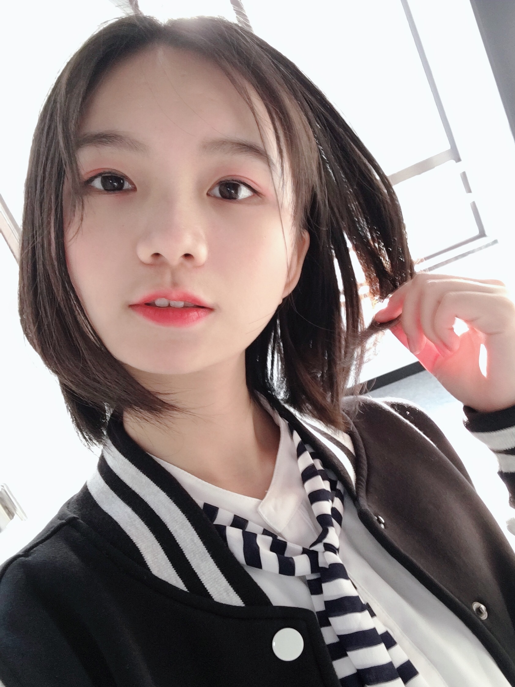

I am an outgoing and energetic designer, seeking a
career in Web/UX design and digital marketing.
- Education
-
Teachers College, Columbia University
Major: Instructional Technology and Media
Coursework: Instructional design of education technology; Theory and Programming of Interactive Media; Mobile Learning
- Skills
-
Languages
Mandarin (native); English (fluent); French (beginner)
Computer skills
HTML and CSS; Microsoft Office; Adobe Premier, Final Cut Pro; Adobe After Effect; Indesign; Photoshop;
Flash; Tableau; Wind; Coggle
- Experience
-
Yixue Education
Project Manager - Shanghai, China - June 2019 – Aug. 2019
- Led a team of 5 to design and implement an adaptive English learning platform for Chinese middle school students;
- Designed Excel templates for project tracking that improved the project management efficiency by 30%;
- Designed and produced entertaining teaching demo videos concerning semantic function presented by two foreign teachers.
Sesame Workshop
Marketing Analyst Intern - Shanghai, China - Sep. 2018 – May. 2019
- Conducted over 800-page market research on 100+ shopping malls, 50+ cross-overs and 30+ famous artists’ works;
- Conducted over 100-page research on 10+ social media and video platforms and designed online promotion strategy;
- Designed over 50 online and offline interactive activities for Sesame Street’s 50th Anniversary Exhibition in 5+ cities;
- Established database of over 100 pages for innovative curating ideas, 10% of which were implemented in the exhibitions.
Shanghai Yingshui Investment Corporation
Equity Research Intern - Shanghai, China - Mar. 2018 – June 2018
- Conducted a 75-page stock analysis on a low-priced convertible bond, whose price rose by 40% in the next year.
- Developed a 40-page report to analyze the value and prospect of Cocos Bond;
China Central Television (CCTV)
Program Director Intern - Beijing, China - Jan. 2018 - Feb. 2018
- Co-directed a documentary program concerning stories in Emergency Room, and it was aired on “Network News Broadcast
(the most influential column in China)” and had over 10 million reading on Weibo platform.
- Independently designed and shot a video concerning teenagers’ addiction on online games during 2018 People’s Congress (NPC) that aroused public concern and collected questions for delegates to the NPC.
- Edited 15+ programs related to environmental issues, in-depth investigation and Spring Festival stories etc.
- Leadership
-
Fudan TV Station
Chief Director- Shanghai, China - Jan. 2017 - June 2017, Jan. 2018 - sJune 2018
- Released programs on graduation, student congress, security, watchmen, dormitory administrators and more, which later
aired on the Shanghai Education Channel;
- Started Fudan University’s first reality show , later debated by Shanghainese universities.